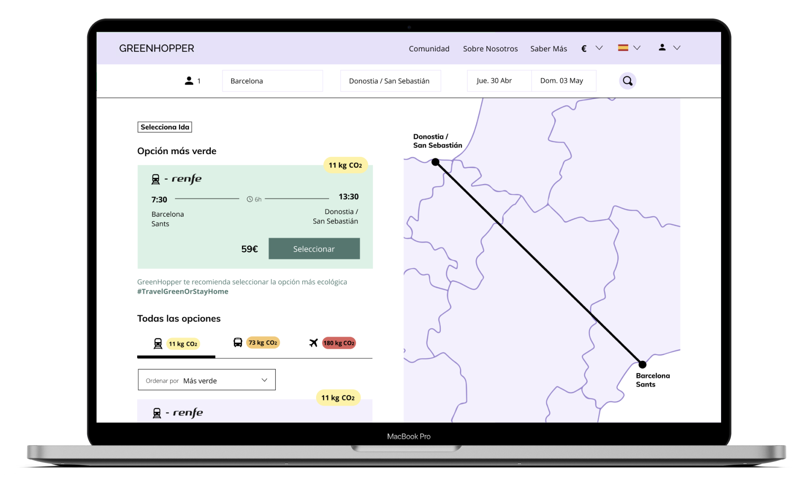
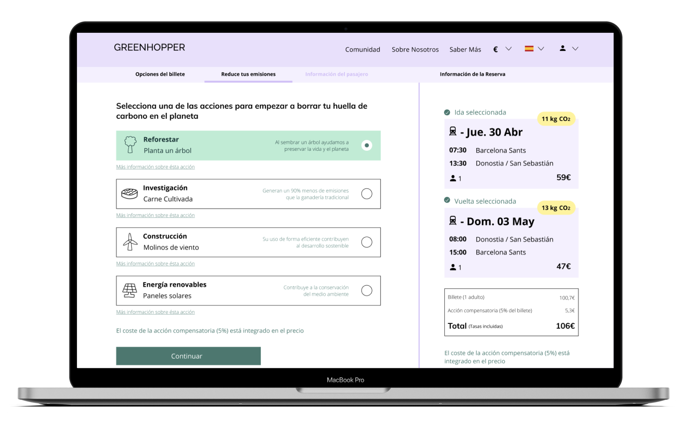

GREENHOPPER
Greenhopper is a platform that I created at my university BAU for my master with three co-students. We iterated this platform four times to improve the usability.
At Greenhopper:
1. You can book your transport.
2. We motivate you to choose the most sustainable option.
3. You compensate your emisions with one of our four sustainable actions.
We used a Design Thinking method that's called 'the Double Diamond' while creating this platform. This is a structure that helps you understand costumers and their problems and explore creative and innovative ways to solve their problems. It consists of four parts: discover, define, develop and deliver. In these phases we used matching techniques like interviewing, prepare questionaires, creating a buyer persona, making a costumer journey map, brainstorm about ideas, creative sessions to explore our ideas, making a roadmap with the structure of the platform, testing the platform etcetera. We designed and protoyped the platform in Figma.

